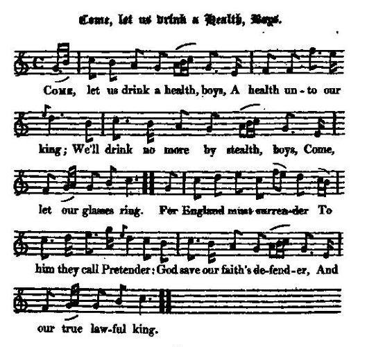

Come, let us drink a Health, Boys
Portons un toste mes enfants
Princess Sophie's death, 1714
Tune - Mélodie"Come, let us drink a Health"
from Hogg's "Jacobite Reliques" part I, N°59
and "The True Loyalist", page 85, 1779
Sequenced by Christian Souchon


|
COME, LET US DRINK A HEALTH, BOYS.
1. Come, let us drink a health, boys, A health unto our king; We'll drink no more by stealth, boys, Come let our glasses ring. For England must surrender To him they call Pretender: God save our faith's defender, And our true lawful king. 2. The royal youth deserveth To fill the sacred place; "Tis he alone preserveth The Stuarts' ancient race. Since 'tis our inclination To call him to the nation, Let each man, in his station, Receive his king in peace. 3. With heart and hand we'll join, boys, To set him on his throne ; We'll all combine as one, boys, Till this great work be done. We'll pull down usurpation, And, spite of abjuration, And force of stubborn nation, Great James's title own. 4. We'll no more, by delusion, With Hogan Mogan [1] join; Nor will we, with profusion, Waste both our blood and coin : But for our king we'll fight, then; Who is our heart's delight, then, Like Scots, in armour bright, then, We'll all cross o'er the Tyne. 5. Sophia's dead and gone, boys, Who thought to have been queen ; The like befall her son, boys, Who thinks o'er us to reign. We'll root out usurpation Entirely from the nation And cause the restoration Of James, our lawful king. 6. But let the Duke of Brunswick Sit still upon his bum; He's but a perfect dunseke, lf e'er he meant to come. The rogues who brought him over, They plainly may discover, 'Twere better for Hanover He'd stay'd and drunk his mum. 7. Ungrateful Prince Hanover, Go home now to thy own! Thou act'st not like a brother To him who owns the crown. There's thirty of that race, man, Before that thou take place, man; It were a great disgrace, man, Thy title yet to own. 8. Let our brave loyal clans, then, Their ancient Stuart race Restore, with sword in hand, then, And all their foes displace. All unions we'll o'erturn, boys, Which caus'd our nation mourn, boys; Like Bruce at Bannockburn, boys, The English home we'll chase. 9. Our king they do despise, boys, Because of Scottish blood But for all their oaths and lies, boys, His title still is good, Ere Brunswick sceptre wield, boys, We'll all die in the field, boys ; For we will never yield, boys, To serve a foreign brood. [2] Source: Jacobite Minstrelsy, published in Glasgow by R. Griffin & Cie and Robert Malcolm, printer in 1828. The "True Loyalist" has stanzas 1, 2, 3(second half) and 4(first half). |
PORTONS UN TOSTE MES ENFANTS
1. Portons un toste, mes enfants, Au roi, à sa santé! Et pourquoi boire en se cachant? Nos verres peuvent tinter! A celui que de "Prétendant" Ils traitent, que les Anglais Se rendent! c'est la foi qu'il défend, Notre roi, le seul, le vrai! 2. Prends place jeune fils de rois Sur la chaise sacrée! Nul ne prolonge, sinon toi, Des Stuarts l'antique lignée. Et tous ici n'ont qu'un désir, Si tu règnes à nouveau: A leur poste, de mieux te servir. Ce sont tes sujets loyaux! 3. Joignons nos pensées, nos efforts En vue de son retour Au trône. Unis, nous sommes forts: Restons-le jusqu'au grand jour! Si l'usurpation est vaincue, L'"abjuration" nonobstant, Que rende cette nation têtue, Son titre à Jacques le Grand! 4. Avec Hogan Mogan jamais [1] Plus de pacte humiliant! Plus de flots en vain déversés De notre or, de notre sang! Réservons-le pour notre roi, Lui que nos cœurs ont choisi. Tels les vieux Scots au brillant harnois, Passons la Tyne, nous aussi! 5. Elle est, Sophie, morte, enterrée Qui pensait être reine. Puisse à son fils la destinée Dénier que sur nous il règne. L'usurpation soit à jamais Un mal qu'on élimine Et luttons pour que soit restauré Jacques, roi légitime. 6. Le Duc de Brunswick peut rester Assis sur son derrière. Ce serait un idiot parfait S'il venait en Angleterre. Les sots qui l'y auraient conduit Auraient tôt fait d'admettre Qu'il aurait dû demeurer chez lui A vider ses fûts de hêtre. 7. Hanovre, qu'aveugle l'oubli, Vas-t-en, sans qu'on te somme, Car c'est ton cousin, l'homme à qui Revient notre couronne. Trente postulants avant toi A cet honneur prétendent Et il ferait beau voir que ta voix Aussi se fasse entendre. 8. Que nos clans braves et dévoués Aux Stuarts, l'antique race, A la pointe de leurs épées Tous leurs concurrents chassent. Mort aux unions que nous jugeons A la nation contraires! Comme Bruce à Bannockburn, boutons L'Anglais hors de nos terres! 9. Ils peuvent honnir notre roi Parce qu'il est d'Ecosse, Leurs serments mensongers n'ont pas De son titre la force. Brunswick, ne crois pas obtenir Ce sceptre à la légère: Nous aimons mieux mourir que servir Une race étrangère. [2] (Trad. Christian Souchon(c)2009) |
|
[1]
Hogan Mogan
: see
The rebellious Crew
[2] This song seems to have been written after the death of Princess Sophie Dorothea, Electress Dowager of Hanover, grand-daughter of James VI; and mother of George I., in 1714. The Jacobite calculated largely on that event, as loosening the connection between the house of Hanover and the British throne. (cf. Came ye frae France ) Source: "Jacobite Minstrelsy" |
[1]
Hogan Mogan
: cf.
The rebellious Crew
[2] Ce chant semble avoir été composé après la mort de la Princesse Sophie Dorothée, Electrice douairière de Hanovre, petite-fille de Jacques VI et mère de Georges I., en 1714. Les Jacobites fondaient de grands espoirs sur cet événement, propre à distendre les liens entre la maison de Hanovre et la couronne britannique. (cf. Came ye frae France ) Source: "Jacobite Minstrelsy" |
|
|
|